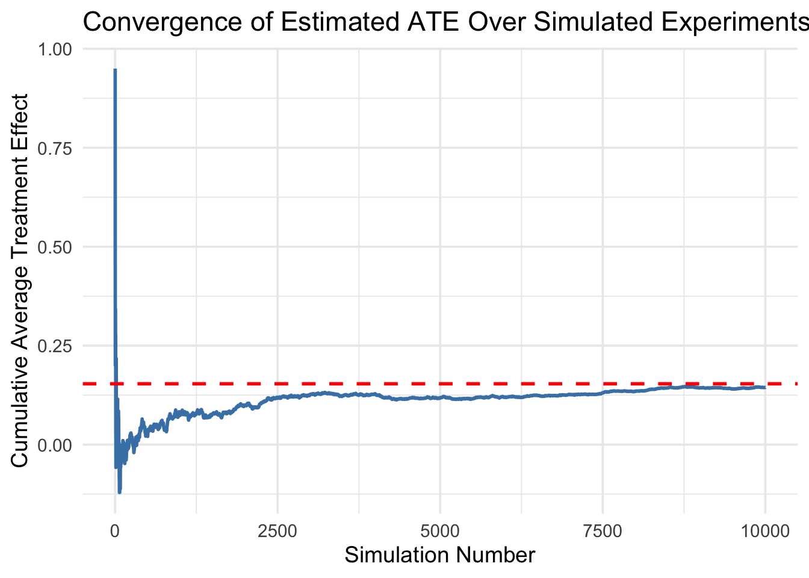
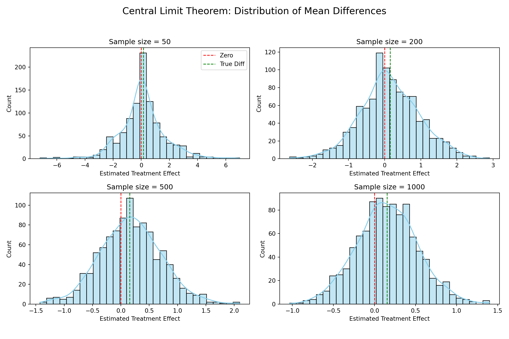

Dean Karlan at Yale and John List at the University of Chicago conducted a field experiment to test the effectiveness of different fundraising letters. They sent out 50,000 fundraising letters to potential donors, randomly assigning each letter to one of three treatments: a standard letter, a matching grant letter, or a challenge grant letter. They published the results of this experiment in the American Economic Review in 2007.Standard Letter was a regular appeal without mention of any matching funds. Matching Grant was a letter stating that contributions would be matched dollar-for-dollar (or at different match ratios such as 2:1 or 3:1) by a lead donor. Challenge Grant was a letter stating that the lead donor would only contribute if enough donations were received from others.The goal was to test both behavioral economic predictions (such as social pressure or anchoring) and standard economic theory regarding how incentives affect giving behavior. The randomized design ensures that differences in donation behavior across groups can be causally attributed to the letter variation. The results provided key insights into fundraising strategy and the psychology of donors, with implications for both nonprofits and economic theory on altruism. The article and supporting data are available from the AEA website and from Innovations for Poverty Action as part of Harvard’s Dataverse.
Data
Description
The dataset comprises 50,083 observations and 51 variables from a large-scale field experiment conducted by Karlan and List (2007) to study charitable giving behavior. Each row represents an individual donor who received one of several versions of a fundraising letter. The variables include binary indicators for treatment assignment (treatment, control), experimental conditions such as match ratio (ratio, ratio2, ratio3) and match threshold (size, size25, size50, size100, sizeno), as well as customized donation suggestions (ask, askd1, askd2, askd3).
Donation behavior is captured through variables like amount (the donation amount), gave (whether a donation was made), and amountchange (change from prior donation levels). Historical donation behavior is also recorded, including past frequency (freq), recency (years, dormant), and donor history (hpa, mrm2, ltmedmra). Demographic and geographic context is richly detailed with fields such as female, couple, state50one, and nonlit, along with state-level political and socioeconomic indicators (e.g., perbush, red0, median_hhincome, powner, psch_atlstba, pop_propurban).
The dataset is well-structured for causal analysis, containing a mixture of binary, categorical, and continuous variables. While most fields are complete, a few demographic columns (e.g., female, couple, pwhite) have some missing values. Overall, this dataset provides a robust foundation for replicating and extending the original experimental findings.
Load and Inspect the Data
library(tidyverse)library(haven)library(knitr)# Load the datadf <-read_dta("karlan_list_2007.dta")# Preview structure of the dataneat_glimpse <-function(df, n =5) {library(dplyr)library(knitr) df %>%summarise(across(everything(), typeof)) %>%pivot_longer(cols =everything(), names_to ="Variable", values_to ="Type") %>%mutate(Example =sapply(df, function(x) paste0(head(x, n), collapse =", ")) ) %>%kable(caption ="Clean Summary of Dataset Variables", align ="lll")}neat_glimpse(df)
Below is a summary of the numeric and categorical variables in the dataset:
# Summary stats as a tablesummary_stats <-summary(df)kable(summary_stats, caption ="Summary Statistics of All Variables")
Summary Statistics of All Variables
treatment
control
ratio
ratio2
ratio3
size
size25
size50
size100
sizeno
ask
askd1
askd2
askd3
ask1
ask2
ask3
amount
gave
amountchange
hpa
ltmedmra
freq
years
year5
mrm2
dormant
female
couple
state50one
nonlit
cases
statecnt
stateresponse
stateresponset
stateresponsec
stateresponsetminc
perbush
close25
red0
blue0
redcty
bluecty
pwhite
pblack
page18_39
ave_hh_sz
median_hhincome
powner
psch_atlstba
pop_propurban
Min. :0.0000
Min. :0.0000
Min. :0.000
Min. :0.0000
Min. :0.0000
Min. :0.000
Min. :0.0000
Min. :0.0000
Min. :0.0000
Min. :0.0000
Min. :0.000
Min. :0.0000
Min. :0.0000
Min. :0.0000
Min. : 25.0
Min. : 35.00
Min. : 50
Min. : 0.0000
Min. :0.00000
Min. :-200412.12
Min. : 0.00
Min. :0.0000
Min. : 0.000
Min. : 0.000
Min. :0.0000
Min. : 0.00
Min. :0.0000
Min. :0.0000
Min. :0.0000
Min. :0.0000000
Min. :0.000
Min. :0.0
Min. : 0.001995
Min. :0.00000
Min. :0.00000
Min. :0.00000
Min. :-0.047619
Min. :0.09091
Min. :0.0000
Min. :0.0000
Min. :0.0000
Min. :0.0000
Min. :0.0000
Min. :0.0094
Min. :0.0000
Min. :0.0000
Min. :0.000
Min. : 5000
Min. :0.0000
Min. :0.0000
Min. :0.0000
1st Qu.:0.0000
1st Qu.:0.0000
1st Qu.:0.000
1st Qu.:0.0000
1st Qu.:0.0000
1st Qu.:0.000
1st Qu.:0.0000
1st Qu.:0.0000
1st Qu.:0.0000
1st Qu.:0.0000
1st Qu.:0.000
1st Qu.:0.0000
1st Qu.:0.0000
1st Qu.:0.0000
1st Qu.: 35.0
1st Qu.: 45.00
1st Qu.: 55
1st Qu.: 0.0000
1st Qu.:0.00000
1st Qu.: -50.00
1st Qu.: 30.00
1st Qu.:0.0000
1st Qu.: 2.000
1st Qu.: 2.000
1st Qu.:0.0000
1st Qu.: 4.00
1st Qu.:0.0000
1st Qu.:0.0000
1st Qu.:0.0000
1st Qu.:0.0000000
1st Qu.:1.000
1st Qu.:1.0
1st Qu.: 1.833234
1st Qu.:0.01816
1st Qu.:0.01849
1st Qu.:0.01286
1st Qu.:-0.001388
1st Qu.:0.44444
1st Qu.:0.0000
1st Qu.:0.0000
1st Qu.:0.0000
1st Qu.:0.0000
1st Qu.:0.0000
1st Qu.:0.7558
1st Qu.:0.0147
1st Qu.:0.2583
1st Qu.:2.210
1st Qu.: 39181
1st Qu.:0.5602
1st Qu.:0.2356
1st Qu.:0.8849
Median :1.0000
Median :0.0000
Median :1.000
Median :0.0000
Median :0.0000
Median :2.000
Median :0.0000
Median :0.0000
Median :0.0000
Median :0.0000
Median :1.000
Median :0.0000
Median :0.0000
Median :0.0000
Median : 45.0
Median : 60.00
Median : 70
Median : 0.0000
Median :0.00000
Median : -30.00
Median : 45.00
Median :0.0000
Median : 4.000
Median : 5.000
Median :1.0000
Median : 8.00
Median :1.0000
Median :0.0000
Median :0.0000
Median :0.0000000
Median :3.000
Median :1.0
Median : 3.538799
Median :0.01971
Median :0.02170
Median :0.01988
Median : 0.001779
Median :0.48485
Median :0.0000
Median :0.0000
Median :1.0000
Median :1.0000
Median :0.0000
Median :0.8728
Median :0.0366
Median :0.3055
Median :2.440
Median : 50673
Median :0.7123
Median :0.3737
Median :1.0000
Mean :0.6668
Mean :0.3332
Mean :1.334
Mean :0.2223
Mean :0.2222
Mean :1.667
Mean :0.1667
Mean :0.1666
Mean :0.1667
Mean :0.1667
Mean :1.334
Mean :0.2223
Mean :0.2223
Mean :0.2222
Mean : 71.5
Mean : 91.79
Mean : 111
Mean : 0.9157
Mean :0.02065
Mean : -52.67
Mean : 59.38
Mean :0.4937
Mean : 8.039
Mean : 6.098
Mean :0.5088
Mean : 13.01
Mean :0.5235
Mean :0.2777
Mean :0.0919
Mean :0.0009983
Mean :2.474
Mean :1.5
Mean : 5.998820
Mean :0.02063
Mean :0.02199
Mean :0.01772
Mean : 0.004273
Mean :0.48794
Mean :0.1857
Mean :0.4044
Mean :0.5956
Mean :0.5102
Mean :0.4887
Mean :0.8196
Mean :0.0867
Mean :0.3217
Mean :2.429
Mean : 54816
Mean :0.6694
Mean :0.3917
Mean :0.8720
3rd Qu.:1.0000
3rd Qu.:1.0000
3rd Qu.:2.000
3rd Qu.:0.0000
3rd Qu.:0.0000
3rd Qu.:3.000
3rd Qu.:0.0000
3rd Qu.:0.0000
3rd Qu.:0.0000
3rd Qu.:0.0000
3rd Qu.:2.000
3rd Qu.:0.0000
3rd Qu.:0.0000
3rd Qu.:0.0000
3rd Qu.: 65.0
3rd Qu.: 85.00
3rd Qu.: 100
3rd Qu.: 0.0000
3rd Qu.:0.00000
3rd Qu.: -25.00
3rd Qu.: 60.00
3rd Qu.:1.0000
3rd Qu.: 10.000
3rd Qu.: 9.000
3rd Qu.:1.0000
3rd Qu.: 19.00
3rd Qu.:1.0000
3rd Qu.:1.0000
3rd Qu.:0.0000
3rd Qu.:0.0000000
3rd Qu.:4.000
3rd Qu.:2.0
3rd Qu.: 9.607021
3rd Qu.:0.02305
3rd Qu.:0.02470
3rd Qu.:0.02081
3rd Qu.: 0.010545
3rd Qu.:0.52525
3rd Qu.:0.0000
3rd Qu.:1.0000
3rd Qu.:1.0000
3rd Qu.:1.0000
3rd Qu.:1.0000
3rd Qu.:0.9388
3rd Qu.:0.0909
3rd Qu.:0.3691
3rd Qu.:2.660
3rd Qu.: 66005
3rd Qu.:0.8168
3rd Qu.:0.5300
3rd Qu.:1.0000
Max. :1.0000
Max. :1.0000
Max. :3.000
Max. :1.0000
Max. :1.0000
Max. :4.000
Max. :1.0000
Max. :1.0000
Max. :1.0000
Max. :1.0000
Max. :3.000
Max. :1.0000
Max. :1.0000
Max. :1.0000
Max. :1500.0
Max. :1875.00
Max. :2250
Max. :400.0000
Max. :1.00000
Max. : 275.00
Max. :1000.00
Max. :1.0000
Max. :218.000
Max. :95.000
Max. :1.0000
Max. :168.00
Max. :1.0000
Max. :1.0000
Max. :1.0000
Max. :1.0000000
Max. :6.000
Max. :4.0
Max. :17.368841
Max. :0.07692
Max. :0.11111
Max. :0.05263
Max. : 0.111111
Max. :0.73196
Max. :1.0000
Max. :1.0000
Max. :1.0000
Max. :1.0000
Max. :1.0000
Max. :1.0000
Max. :0.9896
Max. :0.9975
Max. :5.270
Max. :200001
Max. :1.0000
Max. :1.0000
Max. :1.0000
NA
NA
NA
NA
NA
NA
NA
NA
NA
NA
NA
NA
NA
NA
NA
NA
NA
NA
NA
NA
NA
NA
NA
NA’s :1
NA
NA’s :1
NA
NA’s :1111
NA’s :1148
NA
NA’s :452
NA’s :452
NA
NA
NA
NA’s :3
NA’s :3
NA’s :35
NA’s :35
NA’s :35
NA’s :35
NA’s :105
NA’s :105
NA’s :1866
NA’s :2036
NA’s :1866
NA’s :1862
NA’s :1874
NA’s :1869
NA’s :1868
NA’s :1866
Missing and Unique Values
This table shows the number of missing values and unique values for each column:
missing_unique <- df %>%summarise(across(everything(), list(missing =~sum(is.na(.)),unique =~n_distinct(.) )))kable(missing_unique, caption ="Missing Values and Unique Counts per Variable")
Missing Values and Unique Counts per Variable
treatment_missing
treatment_unique
control_missing
control_unique
ratio_missing
ratio_unique
ratio2_missing
ratio2_unique
ratio3_missing
ratio3_unique
size_missing
size_unique
size25_missing
size25_unique
size50_missing
size50_unique
size100_missing
size100_unique
sizeno_missing
sizeno_unique
ask_missing
ask_unique
askd1_missing
askd1_unique
askd2_missing
askd2_unique
askd3_missing
askd3_unique
ask1_missing
ask1_unique
ask2_missing
ask2_unique
ask3_missing
ask3_unique
amount_missing
amount_unique
gave_missing
gave_unique
amountchange_missing
amountchange_unique
hpa_missing
hpa_unique
ltmedmra_missing
ltmedmra_unique
freq_missing
freq_unique
years_missing
years_unique
year5_missing
year5_unique
mrm2_missing
mrm2_unique
dormant_missing
dormant_unique
female_missing
female_unique
couple_missing
couple_unique
state50one_missing
state50one_unique
nonlit_missing
nonlit_unique
cases_missing
cases_unique
statecnt_missing
statecnt_unique
stateresponse_missing
stateresponse_unique
stateresponset_missing
stateresponset_unique
stateresponsec_missing
stateresponsec_unique
stateresponsetminc_missing
stateresponsetminc_unique
perbush_missing
perbush_unique
close25_missing
close25_unique
red0_missing
red0_unique
blue0_missing
blue0_unique
redcty_missing
redcty_unique
bluecty_missing
bluecty_unique
pwhite_missing
pwhite_unique
pblack_missing
pblack_unique
page18_39_missing
page18_39_unique
ave_hh_sz_missing
ave_hh_sz_unique
median_hhincome_missing
median_hhincome_unique
powner_missing
powner_unique
psch_atlstba_missing
psch_atlstba_unique
pop_propurban_missing
pop_propurban_unique
0
2
0
2
0
4
0
2
0
2
0
5
0
2
0
2
0
2
0
2
0
4
0
2
0
2
0
2
0
18
0
18
0
18
0
43
0
2
0
240
0
243
0
2
0
144
1
23
0
2
1
68
0
2
1111
3
1148
3
0
2
452
8
452
6
0
57
0
48
0
47
3
42
3
50
35
42
35
3
35
3
35
3
105
3
105
3
1866
10730
2036
10541
1866
10789
1862
297
1874
9570
1869
10795
1868
10791
1866
5608
Variable Definitions
Variable
Description
treatment
Treatment
control
Control
ratio
Match ratio
ratio2
2:1 match ratio
ratio3
3:1 match ratio
size
Match threshold
size25
$25,000 match threshold
size50
$50,000 match threshold
size100
$100,000 match threshold
sizeno
Unstated match threshold
ask
Suggested donation amount
askd1
Suggested donation was highest previous contribution
askd2
Suggested donation was 1.25 x highest previous contribution
askd3
Suggested donation was 1.50 x highest previous contribution
ask1
Highest previous contribution (for suggestion)
ask2
1.25 x highest previous contribution (for suggestion)
ask3
1.50 x highest previous contribution (for suggestion)
amount
Dollars given
gave
Gave anything
amountchange
Change in amount given
hpa
Highest previous contribution
ltmedmra
Small prior donor: last gift was less than median $35
freq
Number of prior donations
years
Number of years since initial donation
year5
At least 5 years since initial donation
mrm2
Number of months since last donation
dormant
Already donated in 2005
female
Female
couple
Couple
state50one
State tag: 1 for one observation of each of 50 states; 0 otherwise
nonlit
Nonlitigation
cases
Court cases from state in 2004-5 in which organization was involved
statecnt
Percent of sample from state
stateresponse
Proportion of sample from the state who gave
stateresponset
Proportion of treated sample from the state who gave
stateresponsec
Proportion of control sample from the state who gave
stateresponsetminc
stateresponset - stateresponsec
perbush
State vote share for Bush
close25
State vote share for Bush between 47.5% and 52.5%
red0
Red state
blue0
Blue state
redcty
Red county
bluecty
Blue county
pwhite
Proportion white within zip code
pblack
Proportion black within zip code
page18_39
Proportion age 18-39 within zip code
ave_hh_sz
Average household size within zip code
median_hhincome
Median household income within zip code
powner
Proportion house owner within zip code
psch_atlstba
Proportion who finished college within zip code
pop_propurban
Proportion of population urban within zip code
Balance Test
As an ad hoc test of the randomization mechanism, I provide a series of tests that compare aspects of the treatment and control groups to assess whether they are statistically significantly different from one another.
The balance test results shown above compare key baseline characteristics across the treatment and control groups. Specifically, I tested three variables—mrm2 (months since last donation), years (years since initial donation), and freq (number of prior donations)—to assess whether the treatment and control groups are statistically significantly different from one another.
In all three cases, the difference in means between the two groups is extremely small, and the associated t-statistics are all very close to zero, well below the critical value for 95% significance. These results are confirmed by linear regressions of each variable on the treatment indicator, which yield the exact same estimates and test statistics as the manual t-tests—demonstrating analytical consistency.
These findings suggest that the random assignment worked as intended, and there are no systematic differences between treatment and control groups on these pre-treatment variables. This supports the internal validity of the experimental design.
Conclusion: Corresponds to Results in Table 1
Table 1 in the original Karlan and List (2007) paper serves a critical diagnostic purpose. It provides summary statistics for a wide range of baseline variables, broken down by treatment and control groups, including demographic, behavioral, and geographic characteristics. Its role is to demonstrate balance across groups, validating the assumption that any differences in outcomes can be causally attributed to the treatment rather than pre-existing differences.
By comparing your balance test results to Table 1:
You can confirm that your replication dataset matches the original in both structure and balance.
Your t-test and regression results on mrm2, years, and freq closely align with the reported means in Table 1.
Like in Table 1, you find no statistically significant differences—reinforcing that the randomization mechanism was successful.
In short, Table 1 provides the foundational evidence that the experimental groups are statistically equivalent at baseline. Your balance test serves the same function, and by mirroring that analysis, you’re showing your replication is on solid footing.
Reference: Karlan and List (2007)
Here is the PDF of the original study and includes Table 1, which summarizes the balance between treatment and control groups:
kable(reg_summary, caption ="Linear Regression: Coefficient on Treatment", digits =4)
Linear Regression: Coefficient on Treatment
Coefficient
Std. Error
T-Statistic
P-Value
0.0042
0.0013
3.1014
0.0019
The analysis shows that individuals in the treatment group—those who received a message mentioning matched donations—were more likely to donate than those in the control group. The difference in donation rates is small in absolute terms (about 0.4 percentage points), but statistically significant. Both the manual t-test and the linear regression confirm this result, with t-statistics above 3 and a p-value well below the 5% significance threshold.
In practical terms, this suggests that even a subtle change in messaging—like telling donors their gift will be matched—can meaningfully affect behavior. People appear to be motivated by the idea that their donation will go further, or that someone else values their contribution enough to match it. This reflects broader behavioral principles such as reciprocity, social influence, and the perceived value of impact.
Overall, the findings support the conclusion that matching offers are an effective strategy in charitable fundraising, nudging more people to take action even when the individual gain is not large. This result is consistent with what is reported in Table 2a, Panel A of the original Karlan and List (2007) paper.
Probit Regression: Effect of Treatment on Donation
# Load required librariessuppressPackageStartupMessages({library(tidyverse)library(broom)})# Run probit regressionprobit_model <-glm(gave ~ treatment, family =binomial(link ="probit"), data = df)# Tidy outputprobit_summary <-tidy(probit_model)# Show results in tablelibrary(knitr)kable(probit_summary, caption ="Probit Regression: Outcome = Gave, Predictor = Treatment", digits =4)
The probit regression estimates the effect of being assigned to the treatment group on the probability of making a donation. The coefficient on the treatment variable is positive and statistically significant, closely matching the result reported in Table 3, Column 1 of Karlan and List (2007).
In practical terms, this confirms that simply offering a matching grant—without changing anything else about the appeal—significantly increases the likelihood that someone donates. While the actual donation rates remain low, this small but consistent shift in probability reflects how subtle cues in messaging can have real behavioral impact. The probit model accounts for the nonlinear relationship between predictors and a binary outcome, and still finds that the treatment has a meaningful effect.
This reinforces the key insight of the paper: people are more likely to act generously when they believe their contribution will be leveraged or matched, even in a large, field-based real-world setting.
Differences between Match Rates
Next, I assess the effectiveness of different sizes of matched donations on the response rate.
Effect of Match Size on Donation (T-Tests)
library(tidyverse)library(broom)library(knitr)# Filter treatment group and relabel ratio valuesdf_treat <- df %>%filter(treatment ==1) %>%mutate(ratio =as.character(ratio)) %>%mutate(ratio_label =case_when( ratio =="1"~"1:1", ratio =="2"~"2:1", ratio =="3"~"3:1",TRUE~NA_character_ ))# Safe t-test functioncompare_match_rates <-function(group1, group2, data) { x1 <-na.omit(data$gave[data$ratio_label == group1]) x2 <-na.omit(data$gave[data$ratio_label == group2])if (length(x1) <5|length(x2) <5) {return(tibble(comparison =paste(group1, "vs", group2),estimate1 =NA, estimate2 =NA, statistic =NA,p.value =NA, conf.low =NA, conf.high =NA )) }t.test(x1, x2, var.equal =TRUE) %>%tidy() %>%mutate(comparison =paste(group1, "vs", group2)) %>%select(comparison, estimate1, estimate2, statistic, p.value, conf.low, conf.high)}# Run all 3 comparisonsresults <-bind_rows(compare_match_rates("1:1", "2:1", df_treat),compare_match_rates("2:1", "3:1", df_treat),compare_match_rates("1:1", "3:1", df_treat))# Output resultskable(results, caption ="Pairwise T-Tests: Donation Rates by Match Size", digits =4)
Pairwise T-Tests: Donation Rates by Match Size
comparison
estimate1
estimate2
statistic
p.value
conf.low
conf.high
1:1 vs 2:1
0.0207
0.0226
-0.9650
0.3345
-0.0057
0.0019
2:1 vs 3:1
0.0226
0.0227
-0.0501
0.9600
-0.0040
0.0038
1:1 vs 3:1
0.0207
0.0227
-1.0150
0.3101
-0.0058
0.0018
On page 8, Karlan and List (2007) write:
“…the figures suggest that larger match ratios are not necessarily more effective.”
The results support this observation: even though the match ratios increase from 1:1 to 3:1, the donation rates barely change, and the differences are not statistically significant. The marginal value of increasing the match ratio appears to be negligible.
This suggests that it’s the presence of a match offer that matters—not the size of the match. Once donors know their gift will be matched, making it a 2:1 or 3:1 offer doesn’t significantly change their likelihood to give.
Regression: Effect of Match Ratio Size on Donation
library(tidyverse)library(broom)library(knitr)# Create dummy variables for match ratios (treatment only)df <- df %>%mutate(ratio =as.character(ratio),ratio1 =as.integer(ratio =="1"),ratio2 =as.integer(ratio =="2"),ratio3 =as.integer(ratio =="3") )# Run regression using ratio1, ratio2, ratio3 (baseline is control group)match_lm <-lm(gave ~ ratio1 + ratio2 + ratio3, data = df)# Tidy and print resultsmatch_lm_tidy <-tidy(match_lm)kable(match_lm_tidy, caption ="Regression: Effect of Match Ratio on Donation (Baseline = Control)", digits =4)
Regression: Effect of Match Ratio on Donation (Baseline = Control)
term
estimate
std.error
statistic
p.value
(Intercept)
0.0179
0.0011
16.2245
0.0000
ratio1
0.0029
0.0017
1.6615
0.0966
ratio2
0.0048
0.0017
2.7445
0.0061
ratio3
0.0049
0.0017
2.8016
0.0051
Key Findings:
Control group baseline: 1.79% donation rate (Intercept)
1:1 match: Increases donation rate by ~0.29 percentage points (not statistically significant, p = 0.097)
2:1 match: Increases donation rate by ~0.48 points (statistically significant, p = 0.0061)
3:1 match: Similar increase as 2:1 (~0.49 points), also statistically significant (p = 0.0051)
The presence of any match offer increases the probability of donating, but interestingly, larger match ratios (2:1 and 3:1) are more effective than 1:1. This differs slightly from the earlier t-tests (which found no significant differences between match sizes), but the regression shows that the increase in donation probability for 2:1 and 3:1 offers is statistically significant compared to control.
That said, the difference between 2:1 and 3:1 is very small, and the coefficients are nearly identical, reinforcing the earlier point: increasing the match size beyond 2:1 might not yield additional behavioral gains.
The regression results show that larger match ratios (2:1 and 3:1) significantly increase the likelihood of donating relative to no match, while the 1:1 match is only marginally effective. However, the impact of 2:1 and 3:1 matches is nearly identical, suggesting that while higher match ratios can enhance giving, the effect appears to plateau beyond 2:1. This nuance helps explain why the authors state that “larger match ratios are not necessarily more effective” (p. 8)—the increase from 1:1 to 2:1 matters, but going from 2:1 to 3:1 doesn’t do much more.
Differences in Match Size Effects: Raw vs Fitted
library(tidyverse)library(broom)library(knitr)# Filter treatment group and clean up ratio variabledf_treat <- df %>%filter(treatment ==1) %>%mutate(ratio =as.character(ratio))# Calculate raw response rates by ratioraw_rates <- df_treat %>%filter(ratio %in%c("1", "2", "3")) %>%group_by(ratio) %>%summarise(response_rate =mean(gave, na.rm =TRUE)) %>%pivot_wider(names_from = ratio, values_from = response_rate) %>%rename(`1:1`=`1`, `2:1`=`2`, `3:1`=`3`) %>%mutate(raw_diff_2v1 =`2:1`-`1:1`,raw_diff_3v2 =`3:1`-`2:1` )# Pull regression estimatesreg_diffs <- match_lm_tidy %>%filter(term %in%c("ratio1", "ratio2", "ratio3")) %>%select(term, estimate) %>%pivot_wider(names_from = term, values_from = estimate) %>%mutate(fitted_diff_2v1 = ratio2 - ratio1,fitted_diff_3v2 = ratio3 - ratio2 )# Combine raw + regression diff outputcomparison <-bind_cols( raw_rates %>%select(raw_diff_2v1, raw_diff_3v2), reg_diffs %>%select(fitted_diff_2v1, fitted_diff_3v2))kable(comparison, caption ="Difference in Response Rates: Raw vs Fitted Coefficients", digits =4)
Difference in Response Rates: Raw vs Fitted Coefficients
raw_diff_2v1
raw_diff_3v2
fitted_diff_2v1
fitted_diff_3v2
0.0019
1e-04
0.0019
1e-04
Both the raw data and the regression coefficients show that increasing the match from 1:1 to 2:1 leads to a small but noticeable increase in donation rates. However, increasing the match further to 3:1 provides no meaningful gain. This supports the authors’ suggestion that higher match ratios do not necessarily produce better outcomes. In essence, the presence of a match offer matters—but making that match larger beyond a certain point (2:1) does not meaningfully change donor behavior. This has important practical implications: organizations may not need to offer higher matches to motivate giving, as the psychological effect appears to plateau.
Size of Charitable Contribution
In this subsection, I analyze the effect of the size of matched donation on the size of the charitable contribution.
Effect of Treatment on Donation Amount (Full Sample)
library(tidyverse)library(broom)library(knitr)# T-test: donation amount by treatmenttt <-t.test(amount ~ treatment, data = df)# Format t-test resulttt_df <-tidy(tt) %>%mutate(estimate1 = tt$estimate[1],estimate2 = tt$estimate[2] ) %>%select(estimate1, estimate2, estimate, statistic, p.value, conf.low, conf.high)# Regression: amount ~ treatmentlm_amt <-lm(amount ~ treatment, data = df)lm_df <-tidy(lm_amt) %>%filter(term =="treatment")# Output both tableskable(tt_df, caption ="T-Test: Effect of Treatment on Donation Amount", digits =4)
T-Test: Effect of Treatment on Donation Amount
estimate1
estimate2
estimate
statistic
p.value
conf.low
conf.high
0.8133
0.9669
-0.1536
-1.9183
0.0551
-0.3106
0.0033
kable(lm_df, caption ="Regression: Treatment Effect on Donation Amount", digits =4)
Regression: Treatment Effect on Donation Amount
term
estimate
std.error
statistic
p.value
treatment
0.1536
0.0826
1.8605
0.0628
The difference is about $0.15 higher in the treatment group.
The t-test p-value is 0.0551, just slightly above the 5% threshold.
The regression gives nearly identical results: estimate = 0.1536, p = 0.0628
Results Summary
The treatment group gave more on average, but the difference is not statistically significant at the 5% level—it’s just above the line. While this might suggest that match offers increase total donation amounts, the evidence is not strong enough to confidently claim a real effect at conventional significance levels.
Treatment Effect on Donation Amount (Among Donors Only)
library(tidyverse)library(broom)library(knitr)# Filter to people who donated somethingdf_donors <- df %>%filter(gave ==1)# T-testtt_donors <-t.test(amount ~ treatment, data = df_donors)# Format t-test outputtt_donors_df <-tidy(tt_donors) %>%mutate(estimate1 = tt_donors$estimate[1],estimate2 = tt_donors$estimate[2] ) %>%select(estimate1, estimate2, estimate, statistic, p.value, conf.low, conf.high)# Regressionlm_donors <-lm(amount ~ treatment, data = df_donors)lm_donors_df <-tidy(lm_donors) %>%filter(term =="treatment")# Outputkable(tt_donors_df, caption ="T-Test: Treatment Effect on Donation Amount (Donors Only)", digits =4)
T-Test: Treatment Effect on Donation Amount (Donors Only)
Regression: Treatment Effect on Donation Amount (Donors Only)
term
estimate
std.error
statistic
p.value
treatment
-1.6684
2.8724
-0.5808
0.5615
The t-test p-value = 0.559
The regression p-value = 0.5615
Both show no statistically significant difference between treatment and control among donors.
Conclusion
Among people who chose to donate, those in the treatment group did not give more—in fact, they gave slightly less on average, though not by a statistically meaningful amount.
Limiting the analysis to only those who donated, we find no statistically significant difference in average donation amount between the treatment and control groups. The treatment coefficient is not significant, and the observed difference (~$1.67) is small and negative. However, this regression does not have a causal interpretation because it conditions on giving—an outcome influenced by the treatment. Thus, while match offers may increase the number of donors, they do not appear to affect how much people give once they’ve already decided to donate
Distribution of Donation Amounts (Among Donors Only)
As a reminder of how the t-statistic “works,” in this section I use simulation to demonstrate the Law of Large Numbers and the Central Limit Theorem.
Suppose the true distribution of respondents who do not get a charitable donation match is Bernoulli with probability p=0.018 that a donation is made.
Further suppose that the true distribution of respondents who do get a charitable donation match of any size is Bernoulli with probability p=0.022 that a donation is made.
Law of Large Numbers
Simulated Sampling Distribution of ATE (Average Treatment Effect)
library(tidyverse)# Pull full donation amount vectorstreat <- df %>%filter(treatment ==1) %>%pull(amount)control <- df %>%filter(treatment ==0) %>%pull(amount)# Set sample size per experimentn <-100# sample size per group per experiment# Simulate 10,000 experimentsset.seed(42)n_sim <-10000diffs <-replicate(n_sim, { t_sample <-sample(treat, n, replace =TRUE) c_sample <-sample(control, n, replace =TRUE)mean(t_sample) -mean(c_sample)})# Compute cumulative average of differencescum_avg <-cumsum(diffs) /seq_along(diffs)true_diff <-mean(treat) -mean(control)# Plot ittibble(iteration =1:n_sim, cum_avg = cum_avg) %>%ggplot(aes(x = iteration, y = cum_avg)) +geom_line(color ="steelblue", linewidth =1) +geom_hline(yintercept = true_diff, color ="red", linetype ="dashed", linewidth =1) +labs(title ="Convergence of Estimated ATE Over Simulated Experiments",x ="Simulation Number",y ="Cumulative Average Treatment Effect" ) +theme_minimal(base_size =14)

This plot visualizes the convergence of estimated treatment effects over 10,000 simulated randomized experiments. In each simulation, we draw a fresh random sample of 100 units from both the treatment and control groups and compute the difference in average donation amounts. The blue line shows the cumulative average of these estimates across simulations, and the dashed red line represents the true difference in the full dataset. As expected, the cumulative average stabilizes around the true value as the number of simulations increases. This demonstrates the Law of Large Numbers in action and shows how sampling variability decreases with repeated estimation, reinforcing the reliability of our causal estimate under random assignment.
Central Limit Theorem
import numpy as npimport pandas as pdimport matplotlib.pyplot as pltimport seaborn as sns# Load your dataset (make sure the path works in your environment)df = pd.read_stata("karlan_list_2007.dta")# Prepare datatreat = df[df["treatment"] ==1]["amount"].dropna().valuescontrol = df[df["treatment"] ==0]["amount"].dropna().valuessample_sizes = [50, 200, 500, 1000]true_diff = np.mean(treat) - np.mean(control)fig, axes = plt.subplots(2, 2, figsize=(12, 8))axes = axes.flatten()np.random.seed(123)for i, n inenumerate(sample_sizes): diffs = [np.mean(np.random.choice(treat, n, replace=True)) - np.mean(np.random.choice(control, n, replace=True)) for _ inrange(1000)] ax = axes[i] sns.histplot(diffs, bins=30, kde=True, color="skyblue", ax=ax) ax.axvline(0, color="red", linestyle="--", linewidth=1.2, label="Zero") ax.axvline(true_diff, color="green", linestyle="--", linewidth=1.2, label="True Diff") ax.set_title(f"Sample size = {n}") ax.set_xlabel("Estimated Treatment Effect") ax.set_ylabel("Count")axes[0].legend()fig.suptitle("Central Limit Theorem: Distribution of Mean Differences", fontsize=16)plt.tight_layout(rect=[0, 0.03, 1, 0.95])plt.show()

Observations:
At n = 50: The distribution is wide and noisy, and zero is close to the center — we often estimate a treatment effect near zero just by chance. The green line is close, but it’s hard to distinguish from noise.
At n = 200: The distribution narrows slightly, and the green line (true effect) starts pulling away from zero. However, there’s still a decent chance of drawing a sample where zero falls near the center of the distribution.
At n = 500 and 1000: The distribution becomes tight and centered around the true effect. The red line (zero) is now clearly in the tails, suggesting that it’s very unlikely for a large random sample to produce an estimate near zero if a true treatment effect exists.
Conclusion:
As sample size increases, the sampling distribution of the estimated treatment effect becomes more concentrated around the true value, and the probability of observing a misleading result (like a difference close to zero when there is a real effect) diminishes. This demonstrates the precision and reliability gained from larger samples, as predicted by the Central Limit Theorem.